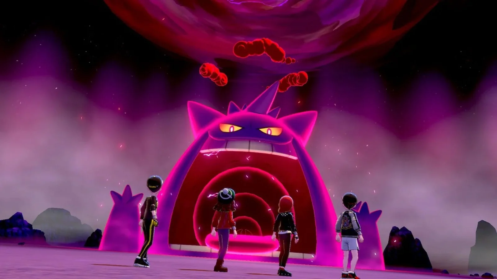
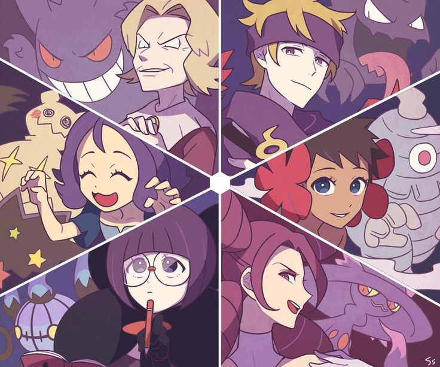
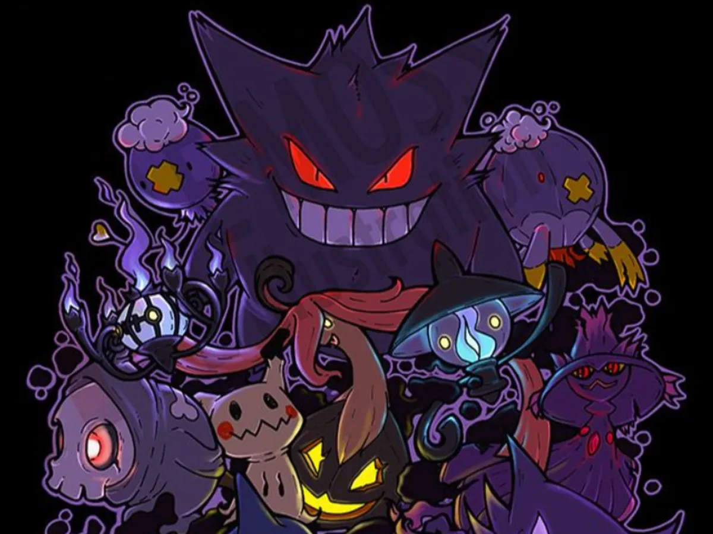

Os Pokémon do tipo Fantasma são raros e o único tipo com duas imunidades. Jogos posteriores adicionaram mais Pokémon a essa lista, então eles agora ocupam a terceira posição de baixo para cima em termos de número de criaturas, acima dos tipos Gelo e Fada. Na primeira geração, os golpes do tipo Fantasma não tinham efeito sobre Pokémon do tipo Psíquico, porém, isso foi alterado posteriormente para torná-los super eficazes. Quando combinado com o tipo Sombrio, era a única combinação de tipos sem fraquezas antes da introdução do tipo Fada na sexta geração. Nas gerações 1 a 3 , todos os golpes do tipo Fantasma eram classificados como Físicos.
Assista esse video
Existem 91 Pokémon do tipo Fantasma
Algums exemplos de Pokemom Fantasmas:
| Nome | Elemenrto |
|---|---|
| Gastly | Veneno |
| Gengar | Veneno |
| Zorua | Fantasma |
| Typhlosion | Fogo |
